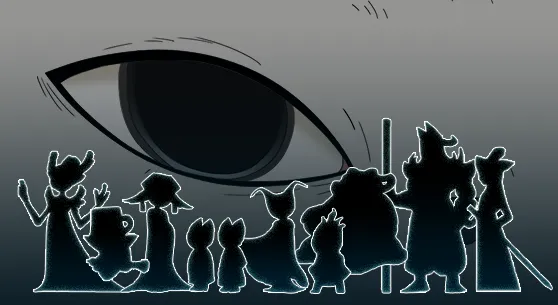
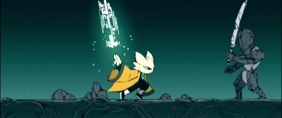

Nine Sols é um jogo de ação-plataforma 2D com combate inspirado em Sekiro: Shadows Die Twice, onde o jogador controla Yi, um herói que busca vingança contra os nove Sols, poderosos governantes de um reino esquecido. A história se passa em New Kunlun, uma terra que foi outrora habitada por uma antiga raça alienígena, e o jogador explora um mundo com influências de cultura asiática, templos tecnológicos e artes marciais.
Dentro do jogo nós como jogador podemos aprender até 36 habilidades para se usar em combate durante toda a jornada por New Kulun.
